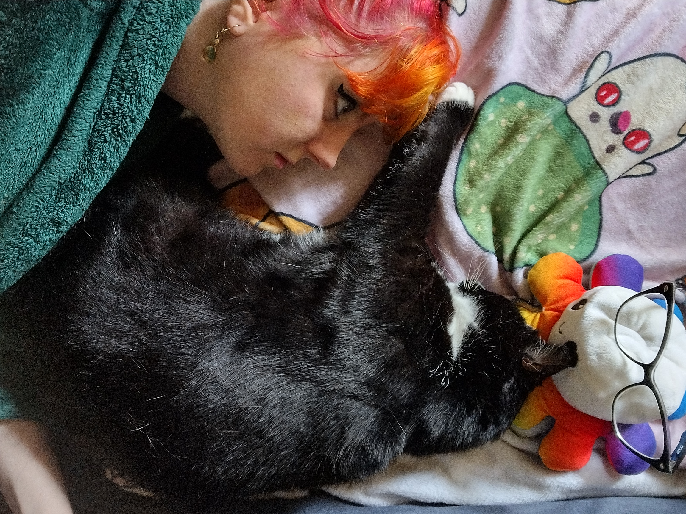

Welcome to Rose's Story
From handling hazard calls to highlighting hair — this is the story of transformation. Working in the office of a pest control company, Rose spent their days managing problems from a distance. The calls were urgent, the work was steady, but the results? Distant and unfulfilling. Watching a colleague celebrate ten years in that same role made one thing clear — that wasn’t the future Rose wanted. So they left. And in doing so, chose something brave: creativity. Enrolling in beauty school wasn’t just about changing careers — it was about stepping into a space where color, expression, and transformation are tangible. Now, Rose brings that spark to a small, independent salon where learning and connection go hand in hand. This site highlights their journey: the courage to begin again, the color they bring to their work, and the hobbies and dreams that make them who they are.
Transformation Journey
Working behind the scenes in a pest control office meant solving problems — but never witnessing solutions. “A guy sets the traps and you hope they work,” Rose shared, summing up the disconnect that defined that job. The lack of vibrancy in those days — and in this photo — says it all.
As beauty school began, color and confidence returned to Rose’s life. With every foil placed and formula mixed, the transformation wasn’t just happening on clients — it was happening in Rose, too. School became more than education — it became empowerment.
Rose stepped into the beauty industry with a fresh license, nerves, and newfound confidence. “Even though it’s hard, and it is hard, I know I’m just beginning,” they said. The sparkle others now see isn’t just on the outside — it’s the glow of someone who finally chose themselves.
About Rose T.
Rose is building a career rooted in color, creativity, and care. From behind the chair to behind the scenes, their journey reflects how much growth can come from one bold decision.
Hobbies
When there’s a quiet moment between clients or a rainy ride home, Rose finds joy in quirky cat games — especially ones where the cats are named after friends. It’s comfort, creativity, and a wink to the people they care about.
From exploring fantasy worlds in WoW (World of Warcraft) to rolling dice in D&D tabletop sessions, Rose brings storytelling and math together in style. Even when the dice roll low, they know how to turn the moment into something unforgettable.

Nature has a way of finding Rose — or maybe it’s the other way around. Whether it’s a walk just beyond the city or a longer trip to see family, Rose always returns with photos of flowers, mushrooms, and little wonders often missed by others.
Learn More
Learn more about the world of cosmetology at this resource.